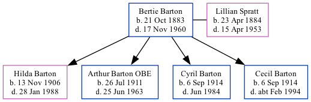

Bertie John Barton 1883 - 1960
[ Home ] | [ Calendar ] | [ Surnames Index ] | [ Family History ], Bertie Barton, the husband of Lillian Spratt (the great-aunt of Nigel Horne), was born in Reculver, Kent, England on Oct 21, 1883<span class="citation">1,2,3,4,5</span>, was baptized there at St Mary on Dec 9, 1883 and married Lillian (a domestic general servant with whom he had 4 children: <a href="I324.html">Hilda May</a>, <a href="I321.html">Arthur George</a>, <a href="I323.html">Cyril Henry</a> and <a href="I2682.html">Cecil John</a>) in Thanet, Kent, England on Dec 23, 1905<span class="citation">7</span>.</p><p>Throughout his life, Bertie lived in several places: in Hastings, Sussex, England in Apr 1899<span class="citation">5</span>; at Phyllis Bungalow, Osborne Gardens in Reculver on Apr 2, 1911<span class="citation">8</span>; and on Three Ways, Reculver Road, Herne Bay, Kent on Sep 29, 1939<span class="citation">2</span>. During 1919, he was serving in the army (<em>army labor corps - private</em>).<p>He died on Nov 17, 1960 in Bridge, Kent<span class="citation">6</span>.
Children
- Hilda May was born on Nov 13, 1906
- Arthur George was born on Jul 26, 1911
- Cyril Henry was born on Sep 6, 1914
- Cecil John was born on Sep 6, 1914
Citations
- 1911 England Census Online publication - Provo, UT, USA: Ancestry.com Operations, Inc., 2011.Original data - Census Returns of England and Wales, 1911. Kew, Surrey, England: The National Archives of the UK (TNA), 1911. Data imaged from the National Archives, London, England.
- 1939 Register - Findmypast (was the head of the household)
- England & Wales, FreeBMD Birth Index, 1837-1915 Online publication - Provo, UT, USA: The Generations Network, Inc., 2006.Original data - General Register Office. England and Wales Civil Registration Indexes. London, England: General Register Office. © Crown copyright. Published by permission of the Cont
- Kent, Canterbury Archdeaconry baptisms 1538-1912 - Findmypast
- UK, Railway Employment Records, 1833-1956 Ancestry.com Operations, Inc.
- England & Wales deaths 1837-2007 - Findmypast
- England & Wales marriages 1837-2008 - Findmypast
- 1911 Census for England & Wales - Findmypast (was age 27 and the head of the household)
Media
Bertie Barton - WWI pension - page 1

Bertie Barton - WWI pension - page 2
Herne Bay Press - 17 Feb 1961
Kent, Canterbury Archdeaconry baptisms 1538-1912 - GBPRS/CANT/B/96379430
England & Wales marriages 1837-2008 - BMD/M/1905/4/AZ/000024/240
Kent, Canterbury Archdeaconry banns 1754-1928 - GBPRS/CANT/M/94045620/1
1939 Register Transcription - TNA-R39-1741-1741D-003-22
England & Wales deaths 1837-2007 - BMD/D/1960/4/AZ/000068/008
England & Wales births 1837-2006 - BMD/B/1883/4/AZ/000035/189
1911 Census for England & Wales - GBC/1911/RG14/04360/0035/1
Family Tree
Generated by Ged2Site. Last updated on Jul 20, 2025